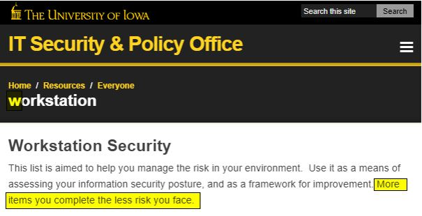
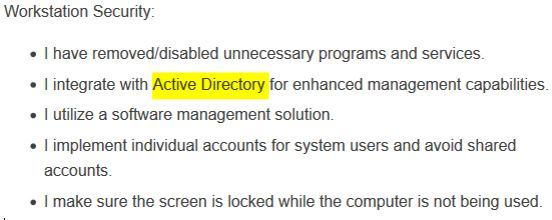
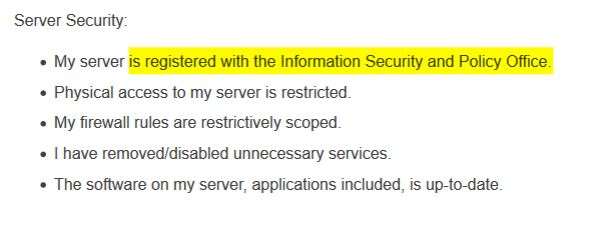
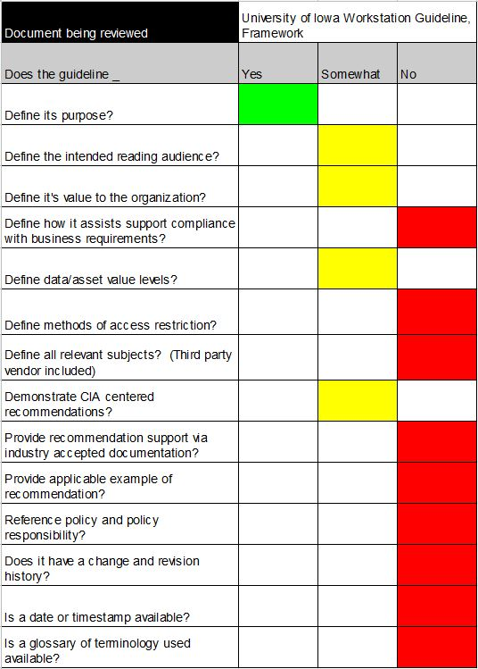

A security program review and overview with examples.
TL;DR - Guidelines assist guide direction but never dictate it. The best guidelines are purposeful, scalable, and easy to read.
Section Hierarchy:
/../Introduction and why should I care?
./Examples # <- You are here
./Examples/Policy
./Examples/Standard
./Examples/Law
./Examples/Standard
Guidelines assist organizations in determining the best path to meet organizational objectives. Guidelines do not enforce any governing rules. Instead, guidelines influence an organization on how to write policies. Guidelines are purposefully scalable, elastic, and customizable to meet organizational business objectives. When selecting a guideline, it's important to understand organizational objectives and the regulations they must adequately satisfy.
In this writeup, we are examining HIPAA covered entities, or organizations that are holding HIPAA protected data known as PHI. Covered entities containing PHI should consider referencing a HIPAA themed Guideline, such as the 2004 CMS and HHS Security Series for Covered entities.
Below are some examples of what a guideline may look like:
The University of Iowa.
https://itsecurity.uiowa.edu/resources/everyone/workstation

Grammar and writing style sums up to readability in any document. Initial reading shows that this document violates both of these values. At the top of the title is an uncapitalized 'w' in workstation, which is out of uniform from the documents capital first letter style. Grammatically, the concluding sentence of the initial paragraph is not proper. It is a fragmented sentence and needs to be corrected. Grammar errors can especially be detrimental to an organization, as they may convey the incorrect message.

Guidelines provide guidance when developing a security project. While guidelines vary in implementation focus, they are all similar in that they recommend measures for compliance satisfaction. When presenting a recommendation, practical guidelines should provide logical reasoning. When guidelines fail to deliver logical reasoning for recommendation, they come off unprepared. For example, active directory implementation doesn't apply to a Linux only environment. Without providing readers the underlying rationale for implementing active directory, guidelines can lose the point of a recommendation. To correct this recommendation, the guideline could recommend the "implementation of a central identity management service for access control."

Guidelines must ensure they apply to all intended parties. When possible, they should be broad and tailorable, minimally stating what's necessary for the recommendation. In the server section, we can see that an information security and policy office is stated as the governing unit for server registrations. An improved way of saying this recommendation would be "User servers are required to register with the organizational unit responsible for security or asset management." This is an improved response because it opens up scalability for more dynamic usage, maintaining the underlying recommendation integrity.
